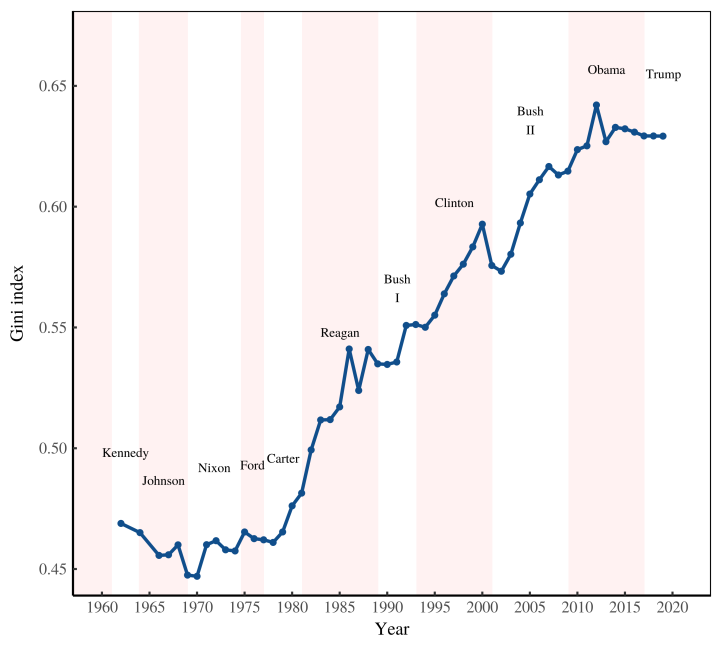

10 Inequality

Figure: Income inequality in the United States. The Gini index of US income inequality since 1962. Shaded regions show the tenure of US presidents* Source:(Blair Fix)
The Institute for Public Policy Research, a Blairite think tank based in the UK, issued a report on economic inequality in October of this year. The report presents a typically centrist response to this social crisis.
The report surveys the empirical data, which paints the familiar and depressing picture. The majority have almost no wealth and are in debt. 5 million people earn less than 8 pounds 10 per hour. In contrast, the richest 10% own 50% of the nation’s wealth. And the majority of that wealth is unearned, since it’s obtained, not by supplying labour, but by the mere ownership of assets.
So what are the causes of such extreme inequality, and why is it increasing? This is the big question the report aims to answer.
The authors give 5 reasons why inequality is increasing:
First, housing. The rate of home ownership is falling.
Second, capital. It’s not equally owned. So profits are not equally distributed.
Third, governments. They’ve decided to tax the wealthy less and less.
Fourth, wages. They’re too low. So people can’t save and accumulate wealth.
Fifth, demand for labour. It’s decreasing due to automation and so-called digital capitalism.The social architecture of capitalism
(If you prefer to watch a video see Video of “Social Architecture of Capitalism” at CU 2019). Things are getting worse
In the last 30 years economic inequality has significantly increased. People at the bottom struggle for food and shelter, while those at the top earn many years worth of the average salary while they sleep. The majority in the middle work hard yet lack savings, living their entire lives a few paychecks from destitution.
Recently I counted 5 people sleeping in shop doorways on the Cowley Road. Such a scene was unthinkable 30 years ago. But homelessness is just one highly visible symptom of a much bigger social catastrophe.
Things have got so bad that even mainstream discourse has shifted to reflect the new reality. We’re routinely told that millennials face low wages, poor quality jobs, high debt, and worse economic outcomes compared to their parents. People now accept that the political system is rigged by a rich elite who’ve captured the institutions of the nation state. And even the arch conservative world of academic economics talks about inequality. And that simply didn’t happen just 10 years ago.
For supporters of capitalism, both on the left and right, this worsening situation poses something of a problem. Obviously something has gone wrong. But what? A typical response
The Institute for Public Policy Research, a Blairite think tank based in the UK, issued a report on economic inequality in October of this year. The report presents a typically centrist response to this social crisis.
The report surveys the empirical data, which paints the familiar and depressing picture. The majority have almost no wealth and are in debt. 5 million people earn less than 8 pounds 10 per hour. In contrast, the richest 10% own 50% of the nation’s wealth. And the majority of that wealth is unearned, since it’s obtained, not by supplying labour, but by the mere ownership of assets.
So what are the causes of such extreme inequality, and why is it increasing? This is the big question the report aims to answer.
The authors give 5 reasons why inequality is increasing:
First, housing. The rate of home ownership is falling.
Second, capital. It’s not equally owned. So profits are not equally distributed.
Third, governments. They’ve decided to tax the wealthy less and less.
Fourth, wages. They’re too low. So people can’t save and accumulate wealth.
Fifth, demand for labour. It’s decreasing due to automation and so-called digital capitalism.Report this ad
I’m not going to waste time to explain why these reasons are bunk. Instead, I’ll simply state they are symptoms of increasing inequality, not causes of it.
So the report completely fails to answer the question it poses. And I’m pleased to say, in a very smug way, that this is exactly what I expected before reading it.
I also expected, and was happy to have my prejudice confirmed, that the report would avoid any mention of workers and capitalists. Of course, there’s plenty of talk of social stratification as defined by market researchers. But the report neglects to mention that capitalism is a system in which one economic class systematically exploits another.
And its economic exploitation — not housing, tax policies or low wages — that is the root cause of the economic inequality we see all around us.
10.0.1 It’s Exploitation
Stop talking about inequality, start talking about exploitation
The IPPR report stated that the main causes of increasing inequality are the unequal ownership of capital, housing policy, low wages, regressive taxation and automation.
But we’ve just seen that, even if we reset society to a perfect and equitable state, where classes have yet to form and everyone has equal wealth, then — as a consequence of the iron laws of thermodynamics — the mere existence of markets and a wage system will rapidly produce exactly the kind of inequality we see around us today.
So the point is this: the fundamental social architecture of capitalism is the main cause of economic inequality. We can’t have capitalism without inequality: it’s an inescapable and necessary consequence of the economic rules of the game.
Government policy can, of course, attempt to control this basic tendency. And most of us would derive marginal benefit from more enlightened housing, tax and wage policies. But such piecemeal reforms are a plaster on a gaping wound.
And since the rich capture democratic institutions even such mild reforms are easily swept aside. We’ve seen a collection of post-war policies, that controlled economic inequality, ditched in the last 30 years. And that’s why things have got even worse.
Extreme economic inequality causes untold misery. At the top we see excessive and wasteful hyper-consumption. At the bottom, countless everyday struggles to live a dignified life.
And decades of political reforms have not produced a fair and equitable society. And they never will. It’s hopelessly utopian to think they could.
Getting serious about economic inequality requires thinking about the fundamentals: which is the wage system, where one class systematically exploits another. We need much less talk about inequality, and much more talk about exploitation.
10.1 Poverty
Hickel
If we nonetheless take the World Bank’s PovcalNet data at face value:
The proportion of people living under $1.90 per day has declined significantly, but poverty as measured by $7.40/day has declined more slowly, from 70.8 percent in 1981 to 58.1 percent in 2013.
The absolute number of people living under $1.90/day has declined significantly, while the number of people living under $7.40/day has risen—from 3.19 billion in 1981 to 4.16 billion in 2013.
The average consumption of people below both the $1.90 and $7.40 poverty lines and above those lines has increased. The “poverty gap” (the average distance below the poverty line) has been shrinking.
These trends need to be distinguished by period and by region:
Between 1981 and 2002 most of the gains against global poverty at $7.40/day came from East Asia and the Pacific: in that region, poverty declined from 98 percent to 88 percent while it increased in the rest of the world. At $1.90, the proportion in poverty in East Asia fell from 81 percent to 30 percent. China drove most of these gains. In the rest of the world, the poverty rate was almost unchanged.
Since 2002, every developing region has seen a decline in the proportion of people living under both $1.90 and $7.40, although the Middle East, South Asia, and sub-Saharan Africa have seen a rise in the absolute number of people living under $7.40/day.
Ultimately, the more morally relevant metric is not proportions or absolute numbers, but rather the extent of poverty vis-a-vis our capacity to end it. By this metric, the world has much to do—perhaps more than ever before.
Hickel: Proposed Consensus on Poverty